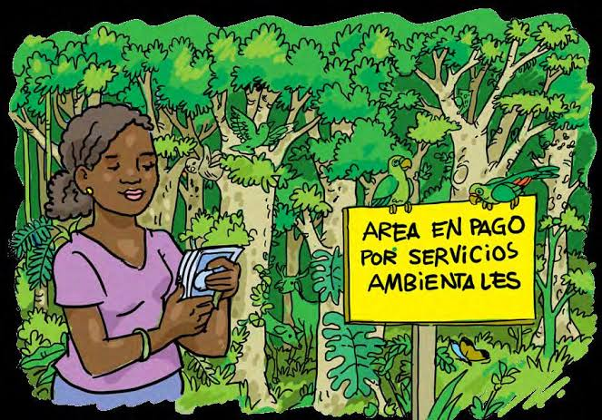
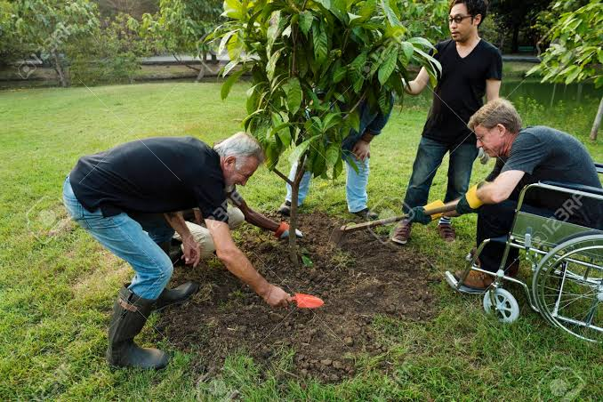

ECOLOGÍA
Web
Home
Desarrollo de comunidades
Servicios ambientales
Conclusión
Datos
Ecoturismo y pago con servicios ambientales
Consiste en viajar por áreas naturales sin perturbarlas, con el fin de disfrutar, apreciar y estudiar tanto sus atractivos naturales, como las manifestaciones culturales que allí puedan encontrarse. Para ser considerado ecoturismo, éste debe de involucrar: Mínimos impactos al medio ambiente.
Pago con servicios ambientales
Los pagos por servicios ambientales, también conocidos como pagos por servicios ecosistémicos, son incentivos ofrecidos a los agricultores o propietarios de tierras a cambio de administrar sus tierras para proporcionar algún tipo de servicio ecológico.
Recibe nuestras notificaciones ecologista!
Enviar
Lugares para practicar ecoturismo
Parque Nacional natural Los Nevados.
Isla Gorgona.
Alta Guajira
Ensenada de Utria
Santuario de Fauna y Flora Iguaque.

Ejemplo de Pago con servicios ambientales
Secuestro y almacenamiento de carbono: por ejemplo, una empresa eléctrica del hemisferio norte paga a campesinos del trópico por plantar y mantener árboles.

Ejemplo de pago de servicios ambientales
Protección de la biodiversidad: por ejemplo, donantes que pagan a los pobladores locales por proteger y restaurar áreas para crear un corredor biológico.